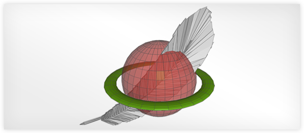
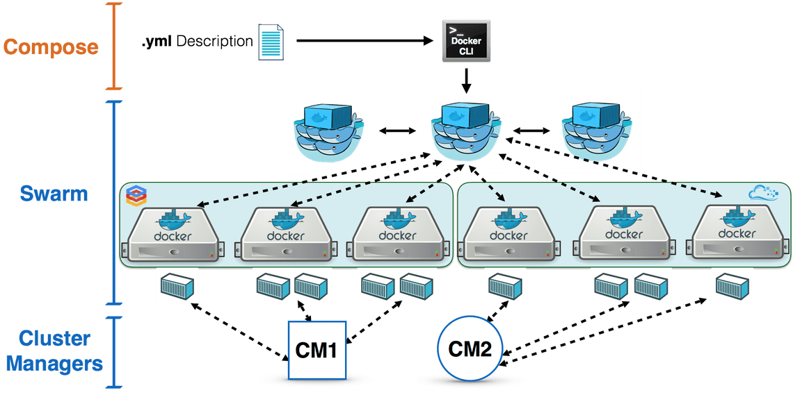

An OGC API to geospatial data
Table of contents
- Geospatial API evolution
- REST/JSON/OpenAPI/Swagger
- OGC activity
- Say hello to pygeoapi
- History
- Features
- Installation
- Deployments
- Community
- Support
Geospatial API evolution
1990s
- Spirit of XML-RPC/CORBA
- SOAP/WSDL/UDDI
- Service Oriented Architecture (SOA)
- Strong concept of RDBMS as the backend
- OGC WMS (1999)
2000s
- Web 2.0
- JavaScript/AJAX/Google Maps
- Slippy maps, tiles
- OGC WFS (2002), WCS (2003), WPS (2005), CSW (2007)
Realities of OGC web services
- Key Value Parameters (KVP) or XML encodings
- Requests using HTTP GET, HTTP POST and SOAP
- Responses as XML (GML)
- Error handling as custom ExceptionReport within an HTTP 200 response
- Exhaustive specifications/requirements
Sample response from an OGC WFS 1.0/2.0 service
More realities

- Complex machinery/architectures (e.g. ldproxy) for services to be crawlable
- Challenging for web developers to implement
- Challenging for mainstream web integration (search indexing)
- Geonovum testbed showed OGC world can easily be made crawlable, and crafted LDProxy
REST/JSON/OpenAPI/Swagger
REST
- REpresentational State Transfer (REST)
- HTTP verbs (GET/PUT/POST/DELETE)
- HTTP codes (200, 201, 404, etc.)
- Uses URI to identify resources
- Content negotiation (media types)
- Stateless
JSON
- JavaScript Object Notation
- Easy to write and understand
- Very popular among web developers
- JSON is first class in RESTful web services
- No rigid standards (for better or worse)
OpenAPI
- Specification on how to describe a REST API
- Defines endpoints, request parameters, response
- Programming language agnostic
- Formerly Swagger
Swagger
- OpenAPI client tooling
- Robust, web developer focused
- Automated documentation, testing, code generation
OGC activity
W3C Spatial Data on the Web Best Practices (2017)
- Recommendations on formats, identifiers, access, licensing, provenance
- Being webby
- https://www.w3.org/TR/sdw-bp/
Design patterns
- Being webby (humans, search engines)
- Developer friendly
- Lightweight specification development
- Removing HTTP use as a tunnel
/ows?request=GetFeature&typename=roads&featureid=5- /api/collections/roads/items/5
-
Modular specification development
- Core and extensions
Timeline
- 2017: W3C Spatial Data on the Web Best Practices
- 2017: OGC API Whitepaper
- 2018: WFS3 Hackathon, Weather on the Web API Hackathon
- 2019: OGC API Hackathon
Future OGC standards
- OGC API - Common (OWS Common)
- OGC API - Features (WFS)
- OGC API - Coverages (WCS)
- OGC API - Maps and Tiles (WMS/WMTS)
- OGC API - Processing (WPS)
- OGC API - Records (CSW)
OGC activity on GitHub
- webby
- Specification development
- Issue tracking/discussion/collaboration
- Standards written in AsciiDoc (!)
- Standards released as HTML (!) or traditional PDF/etc.
- Gitter chat
Say hello to pygeoapi
 A Geopython project
A Geopython project- Created by @tomkralidis in 2018 on Valentines Day with ❤️
Project Overview
- Geospatial data API framework
- OGC Compliant (already!)
- OSGeo Community Project
- International team (Canada, Netherlands, Greece)
- 13 core contributors
- 21000 upstream contributors (dependencies)
Technical Overview
- Core abstract API; web framework agnostic (default Flask)
- YAML configuration (metadata, dataset connections
- Automated OpenAPI document generation (data binding)
- Robust plugin framework (data connections, formats, processing)
- Easy deployment (pip install, Docker)
- Minimal dependencies

Data Providers
 |
 |
 | |
| Elasticsearch | CSV | Spatialite* | GeoJSON* |
* also via GDAL-OGR Provider
Data Providers - GDAL/OGR

- Via OGR-Python bindings
- Unleashes ~100 Vector Formats! (WFS 1/2, GeoPackage, Shapefile, GeoJSON, PostGIS, ...)
- Paging, reprojection, spatial/attribute query
- Unlock existing WFS 1/2s!
Docker
Overview

- pygeoapi Docker Images on DockerHub
- Images create Linux containers running content
- Use Docker Images to test locally or deploy in server

- HTML encoding is annotated as schema.org/Dataset to facilitate search engines
- Google dataset search locates pygeoapi datasets
Docker
- Custom config via Docker Volume Mapping
- Run with Docker Compose
- Subpath running via Flask
SCRIPT_NAMEenvironment variable - Examples
Scaling pygeoapi
 Cloud clustering with high availabilityProduction instances
Canada
Meteorological Service of Canada GeoMet platform
- OGC web services platform of Canadian weather, climate and water data
- Reatime weather
- Numerical weather prediction
- Hydrometric and Climate archives
MSC pygeoapi implementation
GLOSIS - Global Soil Information
- Global soil information system under development by FAO and ISRIC
- Using pygeoapi as an external API providing OGC API - Features
- Testbed for JSON-LD for soil data distribution
- https://glosis.isric.org/ogc
Roadmap
- More data providers
- Content negotiation (e.g. Response as GeoPackage, GML,...)
- Advanced filters (CQL)
- More OGC APIs: Maps, Tiles, Coverages, Processes
Support

Need support for WFS3.0???
GeoCat can help you


Links
Thank you!
@tomkralidis @JMendesDeJesus @normanbarker @perrygeo @justb4 @pvgenuchten @tzotsos